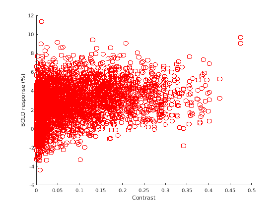
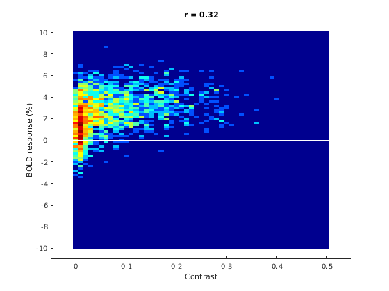
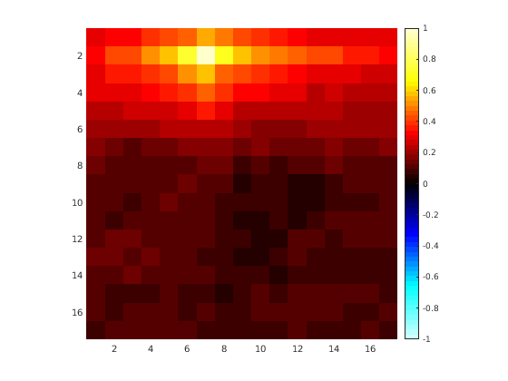
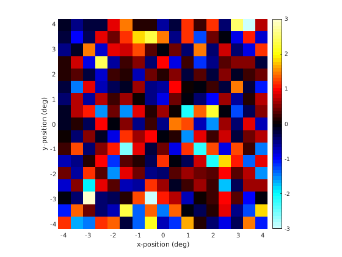
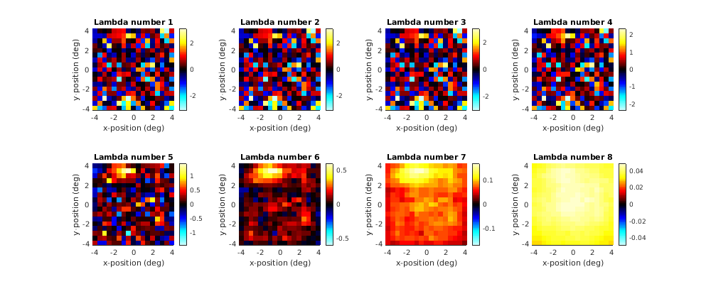
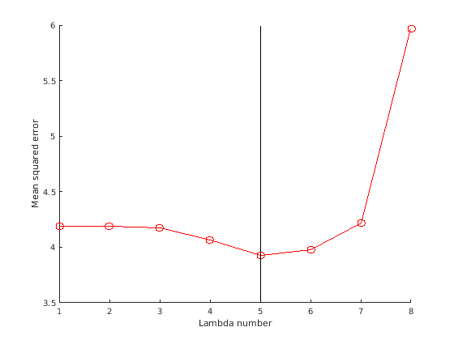
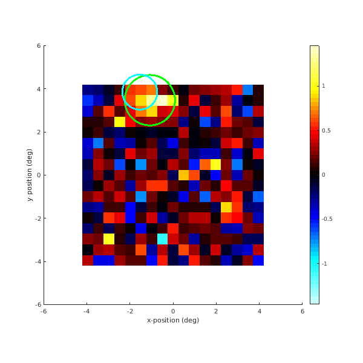

Example 10: Building encoding models
Contents
- Introduction
- General setup
- Do some stimulus pre-processing
- Do some experimental-design preparation
- Define the ROI that we will load from
- Load NSD betas for the ROI
- Start with a simple univariate regression
- Think about multiple regression and stimulus correlations
- Perform the multiple regression
- Build the encoding model using ridge regression
- Use analyzePRF to build the encoding model
- Inspect all of the results
- Postmortem
Introduction
% In this script, we go through an example of building an encoding model for one % voxel in the NSD data. The model that we use is based on image contrast (computed % as the standard deviation of luminance within small square chunks of the image), % but the principles demonstrated here generalize to other types of models. % % Skills/concepts: % - OLS regression, ridge regression % - Cross-validation % - Correlated regressors % - pRF concepts and the analyzePRF.m toolbox
General setup
% define stimfile = '~/nsd/nsddata_stimuli/stimuli/nsd/nsd_stimuli.hdf5'; expfile = '~/nsd/nsddata/experiments/nsd/nsd_expdesign.mat'; nsess = 5; % how many of the first N NSD sessions to consider betaver = 'betas_fithrf'; % which beta version to load subjix = 1; ng = 17; % number of elements in contrast grid (ng x ng) npx = 25; % number of pixels that make up one grid element (npx x npx) stimdeg = 8.4; % size of stimulus in degrees of visual angle % load exp1 = load(expfile);
Do some stimulus pre-processing
% determine vector of all of the 73k IDs that are involved in the data we will load allimix = unique(exp1.subjectim(subjix,exp1.masterordering(1:750*nsess))); % load and prepare images ims = zeros(425,425,length(allimix)); for p=1:length(allimix) statusdots(p,length(allimix)); im = h5read(stimfile,'/imgBrick',[1 1 1 allimix(p)],[3 425 425 1]); im = single(rgb2gray(permute(im,[3 2 1]))); % convert to grayscale and to single format im = (im/255).^2; % convert to [0,1] and square to match display gamma ims(:,:,p) = im; end size(ims)
....................
ans =
425 425 2492
% compute a "contrast grid" from the images imagecon = zeros(ng,ng,length(allimix)); for rowix=1:ng statusdots(rowix,ng); for colix=1:ng rowii = (rowix-1)*npx + (1:npx); colii = (colix-1)*npx + (1:npx); imagecon(rowix,colix,:) = std(squish(ims(rowii,colii,:),2),[],1); % standard deviation of pixels end end size(imagecon)
.................
ans =
17 17 2492
Do some experimental-design preparation
% we want a trial-length vector that provides indices into the loaded images expandtrials = []; for p=1:750*nsess thisid = exp1.subjectim(subjix,exp1.masterordering(p)); % the 73k ID expandtrials(p) = find(ismember(allimix,thisid)); % index relative to loaded images end size(expandtrials) min(expandtrials) max(expandtrials)
ans =
1 3750
ans =
1
ans =
2492
Define the ROI that we will load from
% load the Kastner atlas roi1 = load_untouch_nii(sprintf('~/nsd/nsddata/ppdata/subj%02d/func1pt8mm/roi/Kastner2015.nii.gz',subjix)); % select any voxel in V1v or V1d (in either hemisphere) mask = ismember(roi1.img,[1 2]); % V1v, V1d % compute some handy indices [d1,d2,d3,dii] = computebrickandindices(mask);
Load NSD betas for the ROI
% load data data = []; % voxels x 750 trials x sessions for p=1:nsess fprintf('sess %d...',p); file0 = sprintf('~/nsd/nsddata_betas/ppdata/subj%02d/func1pt8mm/%s/betas_session%02d.mat',subjix,betaver,p); a1 = matfile(file0); temp = double(a1.betas(d1,d2,d3,:))/300; % convert to double and then convert to percent signal change temp = squish(temp,3); % flatten voxels temp = temp(dii,:); % extract the voxels we want data(:,:,p) = temp; % record end size(data)
sess 1...sess 2...sess 3...sess 4...sess 5...
ans =
2261 750 5
Start with a simple univariate regression
% Here, we have pre-selected a single voxel and a single stimulus % feature to demonstrate some basic points. % define voxix = 59; % this is an index relative to the voxels we have loaded stimrowix = 2; stimcolix = 7; % get the data for one voxel (concatenate all trials) onevox = vflatten(data(voxix,:,:)); % trials x 1 % simple inspection figure; hold on; xx = flatten(imagecon(stimrowix,stimcolix,expandtrials)); yy = flatten(onevox); scatter(xx,yy,'ro'); xlabel('Contrast'); ylabel('BOLD response (%)');
% In essence, this shows the key result that drives all other % analyses: the higher the contrast, the larger the BOLD response. % However, the details of the plot are hard to interpret due % to the density of the dots.
% make a better plot figure; hold on; xbins = 0:.01:.5; ybins = -10:.2:10; [n,x,y] = hist2d(xx,yy,xbins,ybins); imagesc(x(1,:),y(:,1),log(n)); colormap(jet); straightline(0,'h','w-'); xlabel('Contrast'); ylabel('BOLD response (%)'); r = calccorrelation(xx,yy); title(sprintf('r = %.2f',r)); axis([-0.05 0.55 -11 11]);
% We haven't really done "regression" per se; however, Pearson's % correlation is essentially regression with one predictor % plus an offset (constant) term. % % Notice: % (1) There is a clear positive relationship between the % stimulus feature (contrast) and the activity. % (2) The relationship is actually not perfectly linear. % (3) Most images tend to sample near the low end of contrast.
Think about multiple regression and stimulus correlations
% The activity in the voxel might be driven by the selected % grid location (row 2, column 7), but might be also driven % by nearby grid locations. The conventional approach to address % this is to fit a multiple regression model that incorporates % regressors for every grid location. However, stimulus correlations % will make this endeavor challenging. % define the reference grid element ref = imagecon(stimrowix,stimcolix,:); % compute correlation with all grid elements featurecorr = calccorrelation(repmat(ref,[ng ng]),imagecon,3); % visualize figure; hold on; imagesc(featurecorr,[-1 1]); axis image tight; set(gca,'YDir','reverse'); colormap(cmapsign4); colorbar;
% Notice that the contrast in location (2,7) is highly correlated % with contrast in nearby locations. In fact, small positive % correlations are found everywhere.
Perform the multiple regression
% Here, we will fit an encoding model that has 17*17 = 289 % parameters. The underlying model is that the response is % given as a weighted sum of the grid contrasts. No intercept % in included in this model; thus, the model implies that % having no contrast anywhere (all grid contrasts are 0) % corresponds to a BOLD response of 0%. This is sensible % given that in the way that the NSD data are prepared, % beta weights of 0% correspond to the BOLD signal intensity % during the absence of image stimulation (gray background % during blank trials). % prepare for regression X = squish(imagecon(:,:,expandtrials),2)'; % trials x features y = onevox; % trials x 1 % fit the weights using ordinary least-squares h = inv(X'*X)*X'*y; % visualize figure; hold on; h1 = imagesc(reshape(h,[ng ng])); set(h1,'XData',([1 ng] - ((1+ng)/2)) * (stimdeg/ng)); set(h1,'YData',([ng 1] - ((1+ng)/2)) * (stimdeg/ng)); axis image tight; set(gca,'YDir','normal'); caxis(max(h(:)) * [-1 1]); colormap(cmapsign4); colorbar; xlabel('x-position (deg)'); ylabel('y-position (deg)');
% The weights appear to be noisy. This is somewhat expected given: % (i) fMRI single-trial responses are quite noisy; (ii) the large % number of parameters being fitted (289) without any regularization; % (iii) the fact that we loaded only 5 NSD sessions (3750 trials); % and (iv) the fact that the regressors are highly correlated.
Build the encoding model using ridge regression
% A natural solution to the challenges noted above is to use % regularization in the parameter estimation, and a classic % regularization technique is ridge regression. Here, we will % perform ridge regression and use cross-validation to select % the amount of regularization to use. % define lambdas = 10.^(-3:4); % calculate the training/testing split [testix,~,trainix] = picksubset(1:length(y),[5 1]); % do it hs = []; % weights x lambdas testerr = []; % 1 x lambdas with the mean squared error for p=1:length(lambdas) X0 = X(trainix,:); y0 = y(trainix); hs(:,p) = inv(X0'*X0 + lambdas(p)*eye(size(X0,2)))*X0'*y0; testerr(p) = mean((X(testix,:)*hs(:,p) - y(testix)).^2); % mean squared error end % which lambda was best? [~,ii] = min(testerr); hfinal = hs(:,ii); % visualize the results figureprep([100 100 1000 400],1); hold on; for p=1:length(lambdas) subplot(2,ceil(length(lambdas)/2),p); hold on; h1 = imagesc(reshape(hs(:,p),[ng ng])); set(h1,'XData',([1 ng] - ((1+ng)/2)) * (stimdeg/ng)); set(h1,'YData',([ng 1] - ((1+ng)/2)) * (stimdeg/ng)); axis image tight; set(gca,'YDir','normal'); caxis(max(hs(:,p)) * [-1 1]); colormap(cmapsign4); colorbar; xlabel('x-position (deg)'); ylabel('y-position (deg)'); title(sprintf('Lambda number %d',p)); end
% visualize test error figure; hold on; plot(testerr,'ro-'); straightline(ii,'v','k-'); xlabel('Lambda number'); ylabel('Mean squared error');
% Lambda number 1 produces essentially no regularization, whereas % Lambda number 8 produces extremely heavy regularization. The % best cross-validation performance is achieved using Lambda number 5.
Use analyzePRF to build the encoding model
% The toolbox analyzePRF implements a 2D Gaussian pRF model. Here, we will % use it to analyze the NSD betas. While it is interesting that the tool % can be used more or less as-is on the NSD betas, there are many % conceptual differences between the two approaches, including the following: % % (1) Typically, pRF analyses are performed on binary stimulus representations that are % either OFF (0) or ON (1). In contrast, the preparation of the NSD stimuli that we % have constructed is continuous (and involves certain assumptions about the "chunk size"). % % (2) pRF analyses are typically performed on time-series data, whereas the betas we % have prepared are amplitudes (expressed in percent signal change). % % (3) The pRF model implemented in analyzePRF not only imposes a shape constraint % (2D isotropic Gaussian) on weights across the visual field, but also incorporates % a static output nonlinearity. In contrast, the regression model demonstrated in % this script is just a linear regression model with no constraints on the weights % (aside from the regularization imposed by ridge regression). % % More information on analyzePRF can be found at analyzePRF/example*.m. % run analyzePRF.m results = analyzePRF(double(imagecon(:,:,expandtrials)), ... onevox',1,struct('hrf',1,'maxpolydeg',0,'seedmode',2,'typicalgain',1));
*** analyzePRF: started at 25-Dec-2019 14:26:03. ***
using the following maximum polynomial degrees: 0
constructing seeds.
generating super-grid time-series...Starting parallel pool (parpool) using the 'local' profile ...
connected to 12 workers.
done.Elapsed time is 26.566305 seconds.
finding best seed for each voxel.
*** fitnonlinearmodel: started at 25-Dec-2019 14:26:31. ***
*** fitnonlinearmodel: loading data. ***
*** fitnonlinearmodel: outputdir = , chunksize = 1, chunknum = 1
*** fitnonlinearmodel: processing voxel 1 (1 of 1). ***
starting resampling case 1 of 1.
for model 1 of 2, the seed is [1.178 5.760 1.414 1.000 0.125 ].
First-Order Norm of
Iteration Func-count Residual optimality Lambda step
0 5 3625.18 58.6 0.01
1 12 3296.23 647 1 7.9396
2 17 3132.12 100 0.1 0.58251
3 22 3076.79 21.8 0.01 0.818545
4 27 3063.84 4.91 0.001 0.646766
5 32 3062.9 1.01 0.0001 0.202889
6 37 3062.86 0.198 1e-05 0.0401131
7 42 3062.86 0.0281 1e-06 0.00666366
Local minimum possible.
lsqcurvefit stopped because the final change in the sum of squares relative to
its initial value is less than the selected value of the function tolerance.
the estimated parameters are [1.946 6.834 0.955 9.379 0.125 ].
for model 2 of 2, the seed is [1.946 6.834 0.955 9.379 0.125 ].
First-Order Norm of
Iteration Func-count Residual optimality Lambda step
0 6 3062.86 19.5 0.01
1 13 3062.68 45.1 0.1 1.01549
2 19 3062.33 1.85 0.01 0.0854575
3 25 3062.33 0.682 0.001 0.082112
4 31 3062.33 0.799 0.0001 0.0273028
Local minimum possible.
lsqcurvefit stopped because the final change in the sum of squares relative to
its initial value is less than the selected value of the function tolerance.
the estimated parameters are [1.971 6.830 0.920 8.391 0.152 ].
trainperformance is 18.32. testperformance is NaN.
aggregatedtestperformance is NaN.
*** fitnonlinearmodel: voxel 1 (1 of 1) took 1.6 seconds. ***
*** fitnonlinearmodel: ended at 25-Dec-2019 14:26:33 (0.0 minutes). ***
saving results to /tmp/tp9e20cea1_4e31_4e42_9fbf_e4bd91adbe3c.mat (just in case).
*** analyzePRF: ended at 25-Dec-2019 14:26:33 (0.5 minutes). ***
Inspect all of the results
% We are now ready to do some comparisons. We have three different sets of results. % One result is the simple linear regression model fitted to the NSD betas % using ridge regression. Another result is the 2D Gaussian pRF model (with output % nonlinearity) fitted to the NSD betas. A third result is the actual prf experiment % that was conducted on the NSD subjects and analyzed using analyzePRF.m. Note that % this reflects a completely different set of data (compared to the NSD betas). % load the prf results prfang = getfield(load_untouch_nii(sprintf('~/nsd/nsddata/ppdata/subj%02d/func1pt8mm/prf_angle.nii.gz',subjix)),'img'); prfecc = getfield(load_untouch_nii(sprintf('~/nsd/nsddata/ppdata/subj%02d/func1pt8mm/prf_eccentricity.nii.gz',subjix)),'img'); prfsize = getfield(load_untouch_nii(sprintf('~/nsd/nsddata/ppdata/subj%02d/func1pt8mm/prf_size.nii.gz',subjix)),'img'); prfexpt = getfield(load_untouch_nii(sprintf('~/nsd/nsddata/ppdata/subj%02d/func1pt8mm/prf_exponent.nii.gz',subjix)),'img'); % perform some indexing voodoo to calculate an index into the 1.8-mm volume space temp = reshape(1:numel(roi1.img),size(roi1.img)); temp = temp(d1,d2,d3); % pull out the brick temp = temp(dii); % pull out the voxels extracted from this brick volix = temp(voxix); % pull out the single voxel used in this script % make a visualization % first, deal with ridge-regression on NSD betas figureprep([100 100 600 600],1); hold on; h1 = imagesc(reshape(hfinal,[ng ng])); set(h1,'XData',([1 ng] - ((1+ng)/2)) * (stimdeg/ng)); set(h1,'YData',([ng 1] - ((1+ng)/2)) * (stimdeg/ng)); axis image tight; set(gca,'YDir','normal'); caxis(max(hfinal) * [-1 1]); colormap(cmapsign4); colorbar; xlabel('x-position (deg)'); ylabel('y-position (deg)'); % then, deal with analyzePRF on NSD betas xpos = cos(results.ang/180*pi) * results.ecc * (stimdeg/ng); ypos = sin(results.ang/180*pi) * results.ecc * (stimdeg/ng); rfsize = results.rfsize * (stimdeg/ng); set(drawellipse(xpos,ypos,0,rfsize,rfsize,[],[],'g-'),'LineWidth',3); % finally, deal with results obtained from the prf experiment xpos = cos(prfang(volix)/180*pi) * prfecc(volix); ypos = sin(prfang(volix)/180*pi) * prfecc(volix); set(drawellipse(xpos,ypos,0,prfsize(volix),prfsize(volix),[],[],'c-'),'LineWidth',3); % finish up axis([-6 6 -6 6]);
% The three sets of results are reasonably consistent.
Postmortem
% There are many choices made in this example script, all of which will % have an effect on modeling results and interpretation. These include % choices with respect to data preparation: % % - We used the NSD betas in their prepared raw units of percent signal change. % Performing session-level normalization, such as z-scoring, may get rid of % unwanted instabilities across sessions and may improve results. % % And include choices with respect to the modeling setup: % % - We prepared the NSD betas at the trial level as opposed to the image level. % Thus, the cross-validation procedure does not necessarily test % generalization to new images. % % And include choices with respect to the model itself: % % - The specific "chunk size" for the contrast grid calculation was somewhat % arbitrary; changing the chunk size will change the nature of the model % and will affect the results. % - To compute contrast, we used standard deviation of luminance values. Other % ways to compute contrast are possible, such as standard deviation divided by % mean luminance. Furthermore, instead of contrast, one could use specific image % features such as the outputs of local oriented filters (e.g. Gabor functions) % applied to the stimulus.